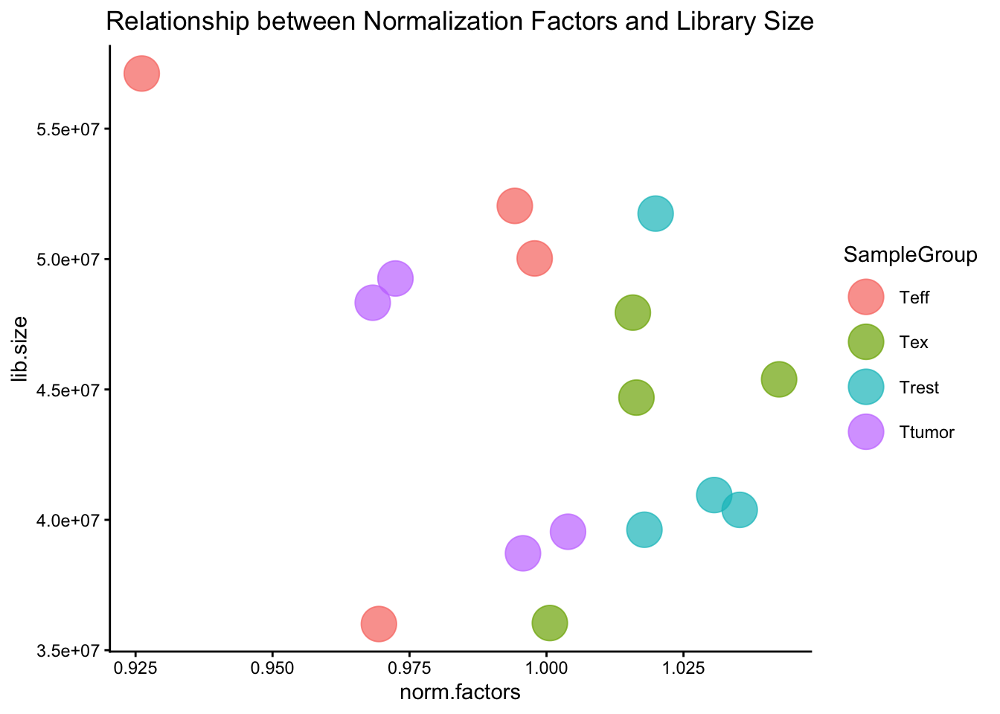
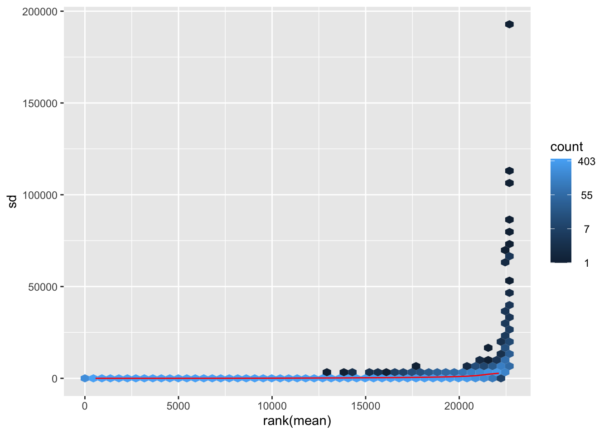
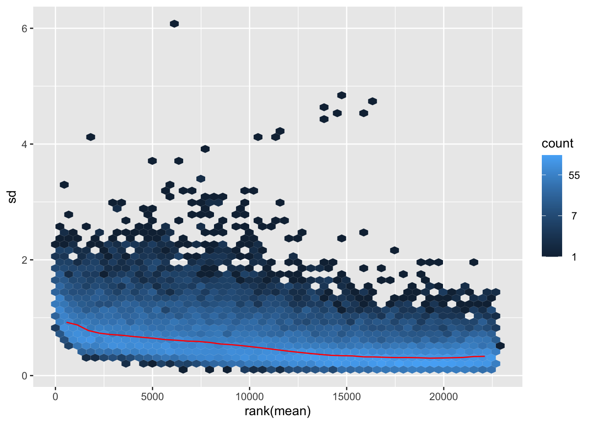
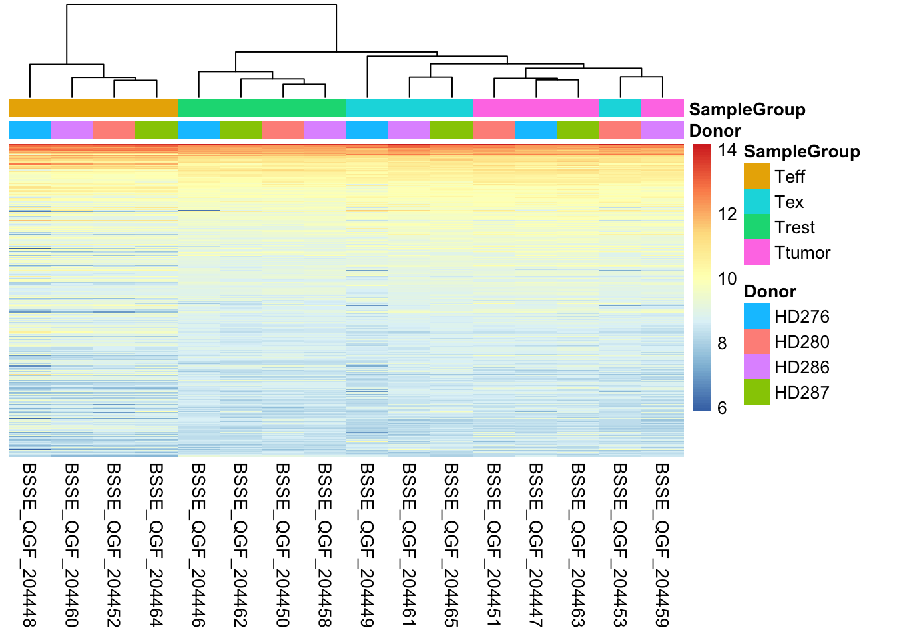
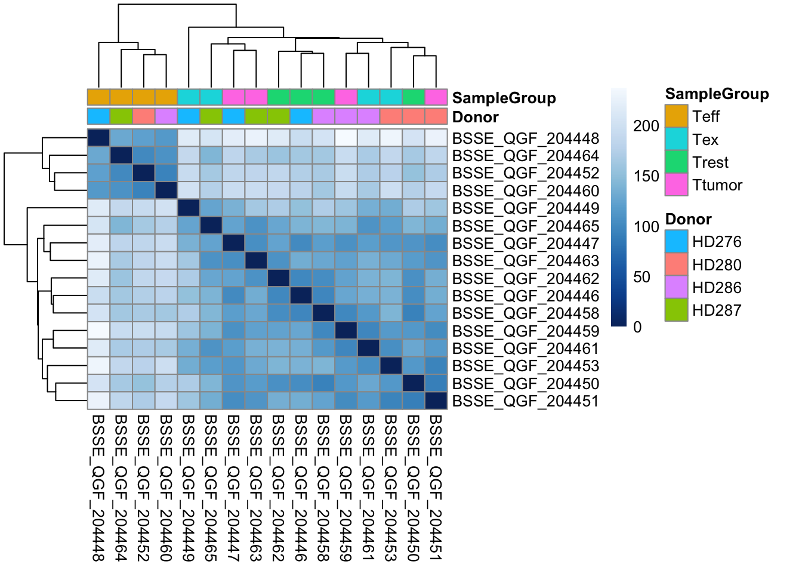
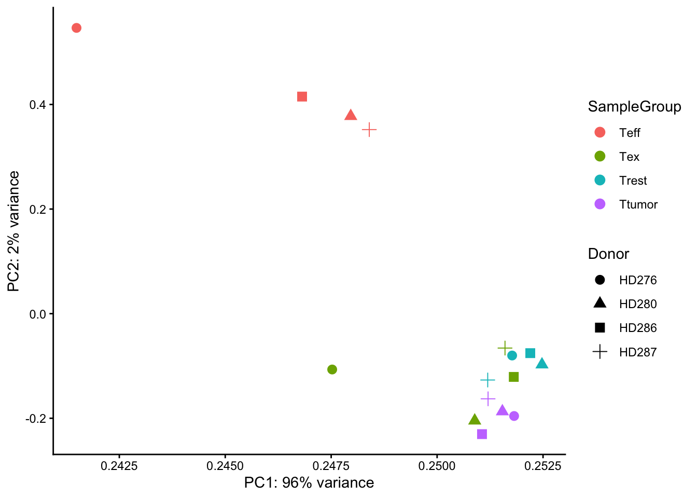
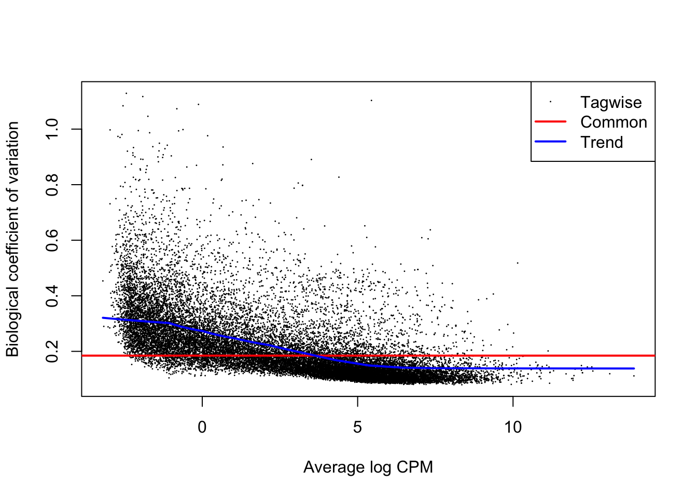
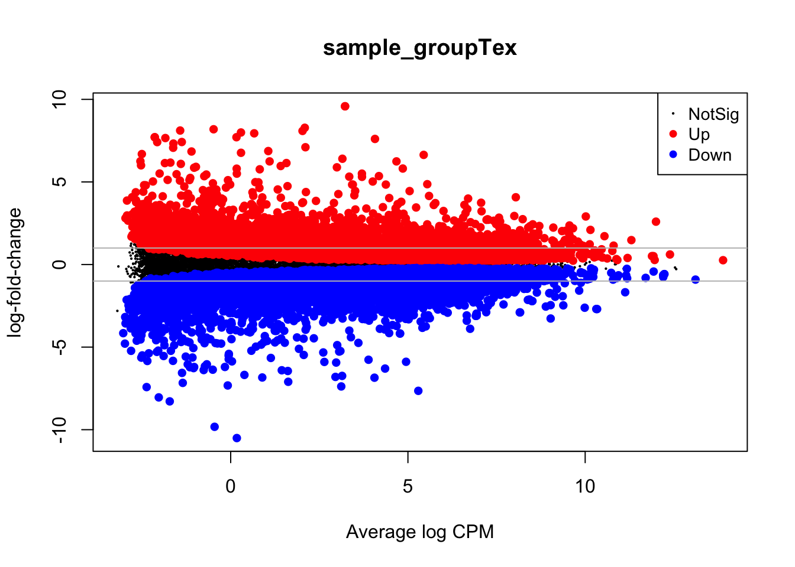
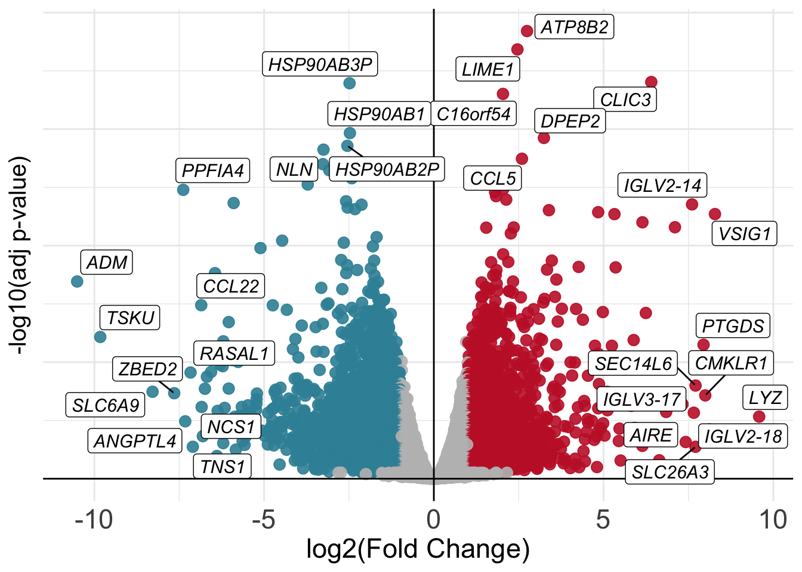
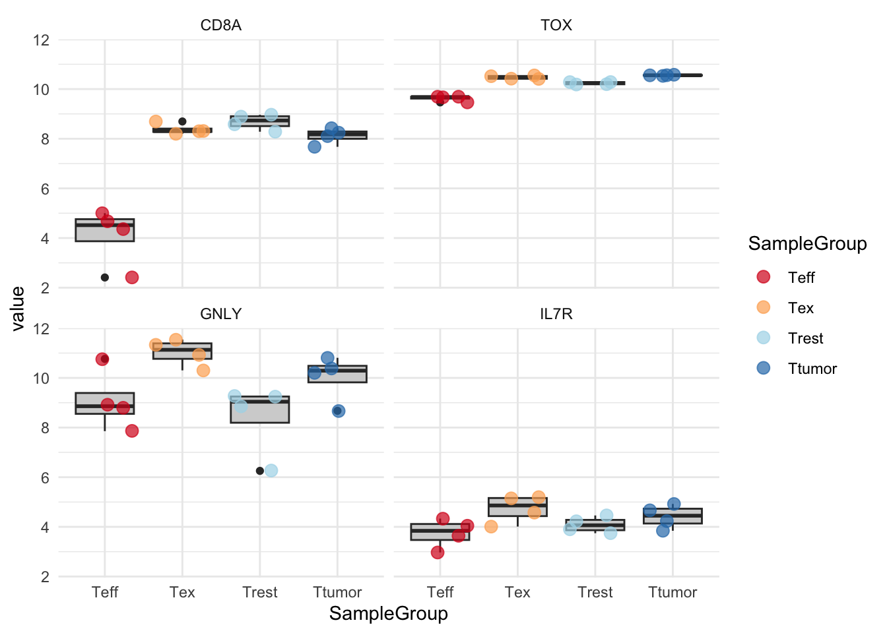

# Load the package
library(edgeR)Day 2
Objectives
- Learn about data normalization
- Learn about the
edgeRpackage - Explore different normalization methods
- Normalize the data with functions provided by the
edgeRpackage - Perform diagnostic and exploratory analysis on the data
- Learn about the theory behind differential gene expression
- Perform differential gene expression with
edgeR
Data Normalization for bulk RNA-seq
Why Do We Need It?
Normalization is the process by which we try to conform count data to make it comparable across samples and even across different genes. This is done to ensure that all of the uninteresting differences between genes are minimized in favor of the interesting biological differences that we want to highlight.
The main factors to take into account when normalizing data are:
- Sequencing Depth:

Differences in sequencing depth (total number of reads in a sample) can cause genes to appear differentially expressed just due to technical reasons.
- Gene Length:

Differences in gene length means that longer genes are prone to have more reads coming from them, therefore we need to normalize also for this aspect while processing data.
- RNA Composition:

Differences in RNA composition are also causative of technical artefacts which can skew the analyses. Differences in the number of genes expressed between samples and the number of differentially expressed gene across samples can greatly and negatively impact normalization methods. In the example, the majority of counts for sample A is related to the DE gene and therefore this might cause other genes to be normalized by this high number of counts, resulting in them appearing to be expressed at a lower level as opposed to the same genes in sample B.
Normalization Strategies
During the years, many approaches to data normalization have been attempted and are summarized in the table below. You can see that they try to tackle each one of the issues we highlighted above.
| Normalization Method | Accounted Factors | Description |
|---|---|---|
| CPM (counts per million) | Sequencing depth | Counts scaled by total read number |
| TPM (transcripts per million) | Sequencing depth and gene length | Counts per length of transcript (kb) per million mapped reads |
| FPKM/RPKM | Sequencing depth and gene length | Counts per kilobase of exon mapped reads per million mapped reads |
| DESeq2’s median of ratios1 | Sequencing depth and RNA composition | Counts are divided by a sample-specific size factor |
| edgeR’s trimmed mean of M values2 | Sequencing depth, RNA composition and gene length | Weighted trimmed mean of the log ratio of expression between samples |
Out of all these, we will use one of the more advanced ones provided in the edgeR package which will be now introduced.
The edgeR Package
Introduction
One of the main interests behind performing a bulk RNA experiment is understanding which genes are more or less expressed across a set of conditions of interest, so we will compare gene expression levels and statistically assess and quantify differences arising between the conditions represented by our categories of samples. In this section we will start getting a feel for what the edgeR package is and how to use it to perform normalization and differential expression analysis on our bulk RNA seq data.
💡 Detailed explanations of the statistical procedures implemented in the package are available in the package’s vignette.
We will start by loading the package that we installed in yesterday’s initial “setup” section:
The package contains many functions which are very helpful when dealing with tables of count data, we can inspect them all by typing the following command:
# This should open a popup window in the lower right part of the screen displaying the functions in the package
??edgeRIn the sections below, we will follow the standard analysis workflow suggested by the edgeR developers.
Create a DGEList object
In order for the package to read and understand our data and correctly perform the analysis, we need to organize our data in a way that the functions of the package can handle. This new object that we are going to create is called DGEList and there is a utility function to create one starting from the ingredients we currently have, (1) a table of counts (our counts object), (2) a table with sample information (our samples object). and (3) one last thing that we need to decide in order tell the package what comparisons we value the most, this is called a design formula.
Behind The Design Formula
The design formula should contain the name of a column of interest in our table of samples which stores the information related to the levels (or categories) we want to contrast. Let’s say that we have a dataset with two conditions (condition_1 vs condition_2) that we want to compare. The samples table will look like this, with three replicates for each of the two conditions:
| Sample Code | Patient | Condition |
|---|---|---|
| SA1 | Pt1 | Condition_1 |
| SA2 | Pt2 | Condition_1 |
| SA3 | Pt3 | Condition_1 |
| SA4 | Pt1 | Condition_2 |
| SA5 | Pt2 | Condition_2 |
| SA6 | Pt3 | Condition_2 |
Paired Analyses
The optimal setting for the analysis (decided experimentally) is to have paired samples. This might be a somewhat difficult concept to grasp, but for our table above this means that every
Patientcontributes equally to the two categories in theConditioncolumns that we are interested in. In this setting, we are fully capable of exploiting the statistics behind the tools we use for differential analysis by correcting for the uninteresting differences arising between patients. This aspect greatly helps the analysis and improves the statistical validity of the results.💡 Remember, this is something achieved by deciding the experimental setting beforehand! Ideally this should be done through a collaborative effort between bioinformaticians/statisticians and bench scientists!
If we are interested in performing a differential expression analysis comparing condition_1 versus condition_2, then our design formula should specify the Condition column.
💡 What is the column that we are interested in when specifying the design formula using in our
samplestable?
Now that we also understand the design formula, we can create the DGEList object with the data that we loaded beforehand, but first we need to check that the columns of the counts table are in the same order of the rows of the sample table, this is important since we want to be sure that the right levels of expression are associated to the right sample.
all(rownames(samples) == colnames(counts))[1] TRUENow that we are sure about this aspect we can actually build the object:
# Create a design formula
donor <- samples$Donor
sample_group <- factor(samples$SampleGroup, levels=c("Teff","Trest","Ttumor","Tex")) # Teff becomes our "control" group to which we compare the others
design <- model.matrix(~ donor + sample_group)
# Create a `DGEList` object and call it dds
dds <- DGEList(counts = counts,
samples = samples
)
# Let's save the `design` in the dds object (remeber that `dds` is just a list in R which can be updated with different elements)
dds$design <- designWe can now remove the counts table from our R environment since that information is stored in our DGEList object now. This is useful to save on memory space!
# Remove original `counts` table to save memory space
rm(counts)
gc()Great! You have created a DGEList object which we called dds, this contains all the information related to the counts table and the sample information table in one spot. We can have a look at the sample information table and the counts table in the dds object like so:
# Look at the table with sample information
head(dds$samples)| group | lib.size | norm.factors | Donor | SampleGroup | sex | |
|---|---|---|---|---|---|---|
| BSSE_QGF_204446 | 1 | 40969678 | 1 | HD276 | Trest | Male |
| BSSE_QGF_204447 | 1 | 38734896 | 1 | HD276 | Ttumor | Male |
| BSSE_QGF_204448 | 1 | 57149808 | 1 | HD276 | Teff | Male |
| BSSE_QGF_204449 | 1 | 45415276 | 1 | HD276 | Tex | Male |
| BSSE_QGF_204450 | 1 | 51767738 | 1 | HD280 | Trest | Male |
| BSSE_QGF_204451 | 1 | 49277273 | 1 | HD280 | Ttumor | Male |
We can see that some new columns were added to the samples table present in our DGEList object when we created it (the group, lib.size, norm.factors columns)! These will be used by edgeR later on for data normalization!
We can also take a look at the table containing the counts, which is just another element of our DGEList object:
# Look at the table with count information
head(dds$counts)| BSSE_QGF_204446 | BSSE_QGF_204447 | BSSE_QGF_204448 | BSSE_QGF_204449 | BSSE_QGF_204450 | BSSE_QGF_204451 | BSSE_QGF_204452 | BSSE_QGF_204453 | BSSE_QGF_204458 | BSSE_QGF_204459 | BSSE_QGF_204460 | BSSE_QGF_204461 | BSSE_QGF_204462 | BSSE_QGF_204463 | BSSE_QGF_204464 | BSSE_QGF_204465 | |
|---|---|---|---|---|---|---|---|---|---|---|---|---|---|---|---|---|
| ENSG00000228572 | 0 | 0 | 0 | 0 | 0 | 0 | 0 | 0 | 0 | 0 | 0 | 0 | 0 | 0 | 0 | 0 |
| ENSG00000182378 | 0 | 0 | 0 | 0 | 0 | 0 | 0 | 0 | 0 | 0 | 0 | 0 | 0 | 0 | 0 | 0 |
| ENSG00000226179 | 0 | 0 | 0 | 0 | 0 | 0 | 0 | 0 | 0 | 0 | 0 | 0 | 0 | 0 | 0 | 0 |
| ENSG00000281849 | 0 | 0 | 0 | 0 | 0 | 0 | 0 | 0 | 0 | 0 | 0 | 0 | 0 | 0 | 0 | 0 |
| ENSG00000280767 | 0 | 0 | 0 | 0 | 0 | 0 | 0 | 0 | 0 | 0 | 0 | 0 | 0 | 0 | 0 | 0 |
| ENSG00000185960 | 0 | 0 | 0 | 0 | 0 | 0 | 0 | 0 | 0 | 0 | 0 | 0 | 0 | 0 | 0 | 0 |
Filtering genes
We can the inspect the size of our dds object to check how many genes and samples we have, you can see that this mirrors exactly the counts table that we had previously, before incorporating it into the object.
dim(dds$counts)[1] 62854 16💡 In
R, list elements are accessible with the$accessor. Ourddsobject is indeed a list made up of three elements, thecountstable, thesamplestable and thedesigntable, these are accessible using$like we did above.
Now we can start removing some genes which are expressed at low levels. This action is justified both from the biological and the statistical points of view. Biologically, lowly expressed genes are less interesting while statistically, they do not provide enough sampling power to confidently test them for differential expression. In the following chunk we filter our dds object by keeping only genes (rows) which have at least 10 detected counts in each sample using the filterByExpr() function in the edgeR package.
# Select which genes to keep
keep <- filterByExpr(dds, design)
# Filter
dds <- dds[keep, , keep.lib.sizes=FALSE]💡 This is somewhat of an “easy” filtering strategy, there are many more complex ones available but sometimes it’s best to keep things simple!
Let’s check how many genes we’re left with after filtering:
dim(dds$counts)[1] 22683 16You can see that we have cut the number of genes in our dataset by more than half, now we have 22683 remaining genes.
Normalizing Count Data
As we have discussed above, normalization is an integral step to the downstream analysis of bulk RNA-seq data. In this section we will normalize our data using the calcNormFactors function of the package. As we have previously introduced, edgeR uses the trimmed mean of M-values (TMM) method to calculate a set of size factors to minimize the log-fold change differences occurring between samples (uninteresting) for the majority of genes. The counts for each sample get then multiplied by the scaling factors to generate what is referred to as effective library size, which will be used for all downstream analyses.
# Call the function to normalize count data
dds <- calcNormFactors(dds)We can check the values of the computed size factors by doing the following, note how there are as many size factors as there are samples and they are inserted in a column of the samples table named norm.factors in our DGEList object:
dds$samples| group | lib.size | norm.factors | Donor | SampleGroup | sex | |
|---|---|---|---|---|---|---|
| BSSE_QGF_204446 | 1 | 40949757 | 1.0306089 | HD276 | Trest | Male |
| BSSE_QGF_204447 | 1 | 38716755 | 0.9957071 | HD276 | Ttumor | Male |
| BSSE_QGF_204448 | 1 | 57115716 | 0.9261344 | HD276 | Teff | Male |
| BSSE_QGF_204449 | 1 | 45387259 | 1.0424493 | HD276 | Tex | Male |
| BSSE_QGF_204450 | 1 | 51743863 | 1.0199158 | HD280 | Trest | Male |
| BSSE_QGF_204451 | 1 | 49255461 | 0.9724292 | HD280 | Ttumor | Male |
| BSSE_QGF_204452 | 1 | 50025518 | 0.9978416 | HD280 | Teff | Male |
| BSSE_QGF_204453 | 1 | 47946651 | 1.0157618 | HD280 | Tex | Male |
| BSSE_QGF_204458 | 1 | 39620524 | 1.0178698 | HD286 | Trest | Male |
| BSSE_QGF_204459 | 1 | 39543464 | 1.0039252 | HD286 | Ttumor | Male |
| BSSE_QGF_204460 | 1 | 36004615 | 0.9694099 | HD286 | Teff | Male |
| BSSE_QGF_204461 | 1 | 36042139 | 1.0006105 | HD286 | Tex | Male |
| BSSE_QGF_204462 | 1 | 40382246 | 1.0352586 | HD287 | Trest | Female |
| BSSE_QGF_204463 | 1 | 48326105 | 0.9682855 | HD287 | Ttumor | Female |
| BSSE_QGF_204464 | 1 | 52039214 | 0.9942164 | HD287 | Teff | Female |
| BSSE_QGF_204465 | 1 | 44687575 | 1.0164136 | HD287 | Tex | Female |
Visualizing the relationshhip between library size and size factors
We can explore the relationship between the total library size for each of our samples and their respective norm.factors to understand what the purpose of the size factors is! Since we are going to use the factors balance differences of counts, we expect a positive relationship between the total number of counts in a sample and its estimated norm.factors.
# Plot relationship
library(ggplot2)
dds$samples %>% ggplot(.,aes(x = norm.factors, y = lib.size, color=SampleGroup)) +
geom_point(size=8, alpha=0.7)+
ggtitle("Relationship between Normalization Factors and Library Size") +
theme_classic() +
theme(plot.title = element_text(hjust = 0.5)) 
💡 NOTE: Although
edgeRdoes not use normalized counts as input (the normalization process happens inside automatically), the normalized counts we just generated are definitely useful when plotting results and performing clustering.
Transforming Count Data
After we have normalized our data, we need to perform a transformation. There are many ways to transform count data but all of them achieve the goal of removing the gene-wise dependence between variance and mean of expression values across samples (something called homoscedasticity) in order to highlight interesting and biologically relevant expression trends even for genes expressed at lower values. We transform the data using a function provided in the edgeR package called cpm() which also performs a logarithmic transformation which has the effect of reshaping the data to achieve gene-wise distributions which resemble a normal distribution. Without getting too much into the details of the workings of the function, we will transform the data and then look at how the gene-wise relationship between the mean and variance in our normalized data changes before and after the transformation. The purpose of this procedure is to allow proper data visualization later in the analysis, the transformed data is NOT used for the differential expression analysis which instead starts from raw counts!
The following code is used to plot the mean/standard deviation relationship of every gene before the transformation.
library(vsn)
# Plot before data transformation
meanSdPlot(dds$counts)
Transform the data and then plot the mean/standard deviation relationship after the transformation.
# Transform the data with a log2 transform (watch how we create a new variable for it)
log2dds <- cpm(dds, log=TRUE)# Check out the transformed values (notice how we now have floating point values and some are even negative!)
head(log2dds)| BSSE_QGF_204446 | BSSE_QGF_204447 | BSSE_QGF_204448 | BSSE_QGF_204449 | BSSE_QGF_204450 | BSSE_QGF_204451 | BSSE_QGF_204452 | BSSE_QGF_204453 | BSSE_QGF_204458 | BSSE_QGF_204459 | BSSE_QGF_204460 | BSSE_QGF_204461 | BSSE_QGF_204462 | BSSE_QGF_204463 | BSSE_QGF_204464 | BSSE_QGF_204465 | |
|---|---|---|---|---|---|---|---|---|---|---|---|---|---|---|---|---|
| ENSG00000182888 | -1.0149871 | -0.8276939 | -0.3549182 | -1.8514197 | -1.115602 | -1.6618073 | -0.8744661 | -1.5038016 | -0.2547841 | -1.0805284 | -0.8356222 | -1.6352550 | -1.0025724 | -1.0191401 | -1.0315768 | -0.8033451 |
| ENSG00000286431 | -0.5471054 | -0.1931254 | -2.4984815 | -0.1680466 | -1.239220 | 0.3755188 | -1.4534058 | -0.3141114 | -0.7014695 | -0.2332744 | -2.4120935 | 0.3700598 | 0.4937172 | 0.2613948 | 0.5415924 | 0.9045618 |
| ENSG00000101846 | 2.1233683 | 1.5858211 | 1.4484255 | 1.4028791 | 1.843186 | 1.1065503 | 0.5128935 | 1.2788434 | 2.1960905 | 1.5810286 | 1.0755162 | 1.6037361 | 2.8425327 | 2.3711547 | 2.1097388 | 2.0027201 |
| ENSG00000285679 | -2.0942552 | -2.5201103 | -0.9510723 | -0.7006700 | -3.975320 | -2.1045036 | -1.7128386 | -1.7807883 | -2.7977125 | -2.0224031 | -2.4120935 | -2.0665580 | -1.5921819 | -2.7227787 | -1.0897366 | -1.5028451 |
| ENSG00000101849 | 6.2932846 | 6.5684439 | 5.7528313 | 6.0670351 | 6.313155 | 6.7504778 | 6.2718734 | 6.4182406 | 5.9469254 | 6.2362473 | 6.0449854 | 6.0232538 | 6.1471371 | 6.5996337 | 6.1418289 | 6.2462658 |
| ENSG00000047644 | 6.7095330 | 6.8576121 | 6.0848036 | 6.7826289 | 6.851492 | 6.7861213 | 6.6774144 | 6.8849740 | 6.8038382 | 6.7468953 | 6.6256517 | 6.9155029 | 6.7548269 | 6.9650206 | 6.2931482 | 6.9985429 |
| ENSG00000004961 | 3.8196064 | 3.4514638 | 4.0436716 | 3.1400969 | 3.981022 | 3.5656781 | 4.0153569 | 3.5366299 | 3.9137232 | 3.5052341 | 3.9041578 | 3.4878931 | 3.9178339 | 3.6855962 | 3.9833428 | 3.2956981 |
| ENSG00000005302 | 7.0462220 | 7.0755388 | 5.5725868 | 6.7473035 | 6.839845 | 6.9951121 | 5.8821984 | 6.9665842 | 6.8417578 | 7.0615117 | 5.8538203 | 7.0057387 | 7.1513026 | 7.1233253 | 6.3282750 | 7.0236595 |
| ENSG00000101911 | 4.7362798 | 4.4243203 | 5.3979519 | 4.8293174 | 4.468497 | 4.1665467 | 5.2938577 | 4.1904009 | 4.9056304 | 4.5910118 | 5.5054859 | 4.7018879 | 4.8114113 | 4.4770266 | 5.4725700 | 4.5377748 |
| ENSG00000229083 | 1.0417306 | -1.5995957 | 1.8322453 | 0.0241205 | 0.955676 | 0.0072169 | 1.4054066 | 0.7370180 | 0.8912343 | 0.4106746 | 1.7146421 | 0.7958171 | 1.1040597 | -2.9421761 | 1.7272985 | -0.3748886 |
# let's plot the transformed values
meanSdPlot(log2dds)
💡 It is clear how genes with high mean expression values (on the right) are now comparable in terms of standard deviation to genes with lower mean expression values (on the left).
Data Quality Visual Assessment
One way to understand trends in our data and the presence of poor quality or outlier samples is to perform exploratory analyses through visualization. In R in general, data visualization is aided by the presence of many packages (on top the basic plotting functionality) which can handle diverse kinds of data visualization tasks (from traditional plots to visualizing tabular data through heatmaps). We will encounter two of these packages, one is ggplot2 and the other one is pheatmap.
Clustering
One of the main strategies for checking the consistency of our dataset is to cluster samples based on their complete expression profile (which as you might recall consists of 22683 genes in our dataset). This will allow us to spot the presence of outliers in the data and look for consistent profiles of gene expression across replicates, which we expect. Use the code below to plot a heatmap of normalized (and transformed) expression values for our samples. Since plotting the full expression table can be computationally expensive, we might want to subset it to the 400 top expressed genes in the dataset.
library("pheatmap")
# Take the top 200 genes in the dataset
select <- order(rowMeans(log2dds),
decreasing=TRUE)[1:400] # Select number of genes
# Create another table for annotating the heatmap with colors
df <- as.data.frame(samples[,c("Donor","SampleGroup")])
# Draw the heatmap using the `pheatmap` package
pheatmap(log2dds[select,], cluster_rows=FALSE, show_rownames=FALSE,
cluster_cols=TRUE, annotation_col=df)
💡 What type of assessment would you make about the consistency of the samples across these top 400 genes? Do they cluster (a synonym for similar) based on the donor or on the biological condition of our interest?
Sample-to-sample Distances
Another way to get a sense of the global relationship between samples is to check for how distant samples are between themselves. This analysis of pairwise distances looks at the expression value of all 22683 genes in the dataset and determines which samples have a more or less similar or different expression value for each. We expect biologically similar samples to have very little difference.
library(RColorBrewer)
# Compute distances
sampleDists <- dist(t(log2dds))
# Organize
sampleDistMatrix <- as.matrix(sampleDists)
colors <- colorRampPalette( rev(brewer.pal(9, "Blues")) )(255)
# Plot with `pheatmap`
pheatmap(sampleDistMatrix,
clustering_distance_rows=sampleDists,
clustering_distance_cols=sampleDists,
color = colors,
annotation_col = df)
# Free up memory space
rm(sampleDistMatrix)
gc()💡 What type of assessment would you make about the heatmap you just produced? Which CD8 T-cell populations are mostly similar in terms of overall gene expression profile? Does a particular population stand out?
Principal Component Analysis (PCA)
Another useful approach for understanding the main variability axes in our data is to compute and plot a PCA. Without getting into the details, PCA takes our expression data and outputs its principal components, which encode the main sources of variability in the data. Ideally, we want the samples to have variability caused by the biological effect of our interest (in this case the differences between CD8 T-cell populations), but this might not be the case. By plotting and coloring the points by different covariates (i.e. donor or cell type) we are able to understand where the variability comes from and if there is any detectable batch effect. Use the code below to generate a scatter plot of PCA coordinates and color them to understand what causes the variability in the data.
library(ggplot2)
# Calculate principal components and percentage of variance
pcs <- prcomp(log2dds, scale = TRUE)
percentVar <- round(100 * summary(pcs)$importance[2,])
pcaData <- as.data.frame(pcs$rotation) %>% merge(samples, by=0)
# Plot (this time with ggplot2!!)
ggplot(pcaData, aes(PC1, PC2, color=SampleGroup, shape=Donor)) +
geom_point(size=3) +
xlab(paste0("PC1: ",percentVar[1],"% variance")) +
ylab(paste0("PC2: ",percentVar[2],"% variance")) +
theme_classic()
💡 What can you say about this PCA? Are the samples positioning themselves based on the donor or their biological condition? What is the most extreme group of samples? How does this information relate to the other plots we produced above?
# Let's clean some space up!
rm(pcs)
rm(pcaData)
rm(log2dds)
gc()Now that we have plotted all the main diagnostic information related to the dataset and we have a bit of a grasp of it, we can start thinking about testing for differentially expressed genes.
Differential Expression Analysis
🤔 At this point we should remind ourselves of why we decided to perform an RNA-seq experiment, do you remember?
The main purpose of the steps we performed previously is to get to this point with a fair knowledge of the data at hand, all the steps have to be repeated each time one starts with some fresh new data (no data is the same!!). Now we can start performing differential expression analysis with the edgeR package. The main concept behind it is to contrast two categories of our interest in the data (i.e. CD8+ Tex vs CD8+ Trest) and check which genes are predominantly (defined in a statistical sense) expressed in one category as opposed to the other. As introduced previously, we tell edgeR which comparisons to perform through the design formula we specified above when we created our DGEList object dds. We can recap the design formula that we specified.
# Check out the design formula we specified (do not copy this, you should have it in your variable `design`)
~ Donor + SampleGroupWith that design formula we are telling the software that we are interested in checking for the gene expression differences happening between the categories present in the SampleGroup column of our samples table while simultaneously correcting for the possible uninteresting differences that can arise across different donors, whose information is stored in the Donor column of the samples table which we can check out below. The Donor therefore represents our batch whose effect we are trying to correct for.
| Donor | SampleGroup | |
|---|---|---|
| BSSE_QGF_204446 | HD276 | Trest |
| BSSE_QGF_204447 | HD276 | Ttumor |
| BSSE_QGF_204448 | HD276 | Teff |
| BSSE_QGF_204449 | HD276 | Tex |
| BSSE_QGF_204450 | HD280 | Trest |
| BSSE_QGF_204451 | HD280 | Ttumor |
The categories are exactly the ones we have been plotting all along up to this point (the different CD8+ T-cell types).
💡 Given that we have four differences categories (these are also called
levelsinR) in ourSampleGroupcolumn (which can also be called afactorinR),edgeRcould perform different comparisons since these are pairwise. We need to keep in mind that our reference values are referred to the CD8+ Teff group!
The Main edgeR Function
Let’s perform differential expression analysis with edgeR on our dataset using the main function for the task in the package, glmTest(). Without going into the mathematical details, this function fits a generalized linear model (GLM) to the data in order to perform inference and decide which genes are statistically up- or down-regulated. We first need to compute gene-wise dispersion estimate with the function estimateDisp(). These are needed by the model in order for its underlying assumptions to hold true. We can visually inspect the fit of the dispersion estimates below.
# First we fit gene-wise dispersion estimates to accomodate the theoretical assumptions of the model
dds <- estimateDisp(dds, design, robust=TRUE)
# Plot the fitted dispersion values
plotBCV(dds)
From the dispersion estimate we can see that we are capturing and modelling efficiently the gene-wise dispersion in the dataset which is intrinsically present due to variation. This variation is quantified in edgeR with a BCV or a Biological Coefficient of Variation which takes into account both unwanted biological variability (specified in the design) and technical variation.
# Fit the GLM
fit <- glmFit(dds, design)
# Perform differential expression testing given the design formula we wrote previously
lrt <- glmLRT(fit, coef=7)Notice how we did not use the transformed version of the dataset (log2dds) but we started from the object dds. As previously mentioned, the package needs to start from raw count data to correctly assess differences in gene expression.
Let’s say that we are very interested in the differences occurring between CD8+ Tex and CD8+ Teff cells. The reason why we specified coef=7 in the code above is explained by how edgeR interprets the design matrix that we built previously, which specifies the kinds of comparison to make. If we take a look at it we can see how the 7th column is the one related to the Tex group, the one we want to compare against our reference group Teff.
head(design, 4)| (Intercept) | donorHD280 | donorHD286 | donorHD287 | sample_groupTrest | sample_groupTtumor | sample_groupTex |
|---|---|---|---|---|---|---|
| 1 | 0 | 0 | 0 | 1 | 0 | 0 |
| 1 | 0 | 0 | 0 | 0 | 1 | 0 |
| 1 | 0 | 0 | 0 | 0 | 0 | 0 |
| 1 | 0 | 0 | 0 | 0 | 0 | 1 |
| 1 | 1 | 0 | 0 | 1 | 0 | 0 |
| 1 | 1 | 0 | 0 | 0 | 1 | 0 |
| 1 | 1 | 0 | 0 | 0 | 0 | 0 |
| 1 | 1 | 0 | 0 | 0 | 0 | 1 |
| 1 | 0 | 1 | 0 | 1 | 0 | 0 |
| 1 | 0 | 1 | 0 | 0 | 1 | 0 |
| 1 | 0 | 1 | 0 | 0 | 0 | 0 |
| 1 | 0 | 1 | 0 | 0 | 0 | 1 |
| 1 | 0 | 0 | 1 | 1 | 0 | 0 |
| 1 | 0 | 0 | 1 | 0 | 1 | 0 |
| 1 | 0 | 0 | 1 | 0 | 0 | 0 |
| 1 | 0 | 0 | 1 | 0 | 0 | 1 |
💡 In GLMs, design matrices are built to communicate the way we want to model samples when testing for gene expression differences. Some packages keep this aspect less exposed than other to allow users which are less familiar with the mathematical concepts to still use the package. Often, better knowledge allows better control and flexibility over what we do, at the cost of greater responsibility!
Exploring Results
After having used the main edgeR function, we can actively explore the results of the analysis for the comparisons of our interest. For example we might want to check if any gene is up-regulated during the process of CD8+ T-cell exhaustion. We can later filter the results based adjusted P-value used to accept or reject the null hypothesis (\(H_{0}\)) of a gene NOT being differentially expressed between the two conditions.
With the code below we can extract a table that we call res which contains the results for every single gene, stored in separate rows.
# Extract the results
res <- as.data.frame(lrt$table)We can now check out our results object, which will be a data.frame, a table.
# Check out results object
head(res, 10)| logFC | logCPM | LR | PValue | |
|---|---|---|---|---|
| ENSG00000182888 | -0.7029828 | -0.9936256 | 4.333398 | 0.0373716 |
| ENSG00000286431 | 1.5482277 | -0.1530747 | 11.626353 | 0.0006502 |
| ENSG00000101846 | 0.2566778 | 1.7994127 | 2.072304 | 0.1499947 |
| ENSG00000285679 | 0.0112720 | -1.7883344 | 0.000694 | 0.9789836 |
| ENSG00000101849 | 0.1295792 | 6.2607280 | 1.290901 | 0.2558820 |
| ENSG00000047644 | 0.4654931 | 6.7504933 | 14.594721 | 0.0001333 |
| ENSG00000004961 | -0.6229699 | 3.7283726 | 25.359617 | 0.0000005 |
| ENSG00000005302 | 1.0203075 | 6.7934565 | 66.996292 | 0.0000000 |
| ENSG00000101911 | -0.8501389 | 4.8448978 | 57.958160 | 0.0000000 |
| ENSG00000229083 | -1.4637379 | 0.8512208 | 10.262077 | 0.0013579 |
We can additionally print out a summary of the results of the differential analysis at a P-value < 0.05 by using the following code:
summary(decideTests(lrt)) sample_groupTex
Down 7097
NotSig 8619
Up 6967In here we can see the type of comparison we are performing (vs the reference, in our case CD8+ Teff cells), the P-value threshold we used and the number of up-regulated and down-regulated genes at varying log-fold change levels, keep in mind that a log-fold change of 1 corresponds to a difference in raw gene expression value of 2 times since the log has a base of 2. So, to recap, all of the genes with log-fold change of 1 or more are twice as expressed in one condition compared to the other and we will later filter genes based on the fold-change value.
Visualizing Results With MD Plots
MD plots are used to get a sense of the proportions of up- and down-regulated genes between two conditions and the number of counts per million (CPM) of each gene, to check if genes with higher counts are statistically preferred to be also differential.
# Plot the MD Plot
plotMD(lrt)
abline(h=c(-1, 1), col="gray")
With the gray line we indicate a fold-change of +/- 1 which, if you recall, stands for an actual magnitude of change of value 2.
Saving Results
Let’s save the results object we just generated in a .csv file. We can then source it back and load it into the session using the code we have seen at the end of the first day of the workshop.
# Save the results object
write.table(res, "results.csv", sep=",", quote = F)In the code below, we will create two new tables with the genes that were up-regulated and down-regulated in the comparison we performed, we will use these later.
# Extract the information related to up-regulated and down-regulated genes
up_df <- res %>% as.data.frame() %>% filter(PValue < 0.05 & logFC > 1)
down_df <- res %>% as.data.frame() %>% filter(PValue < 0.05 & logFC < -1)If we check the table with the up-regulated genes we can see it has the following structure (we just took some specific rows - genes - of the complete results table corresponding to up-regulated genes):
head(up_df, 4)| logFC | logCPM | LR | PValue | |
|---|---|---|---|---|
| ENSG00000286431 | 1.548228 | -0.1530747 | 11.626353 | 0.0006502 |
| ENSG00000005302 | 1.020307 | 6.7934565 | 66.996292 | 0.0000000 |
| ENSG00000176896 | 1.483469 | 2.7280733 | 50.230238 | 0.0000000 |
| ENSG00000289449 | 1.587554 | -1.3504361 | 5.973323 | 0.0145239 |
💡 How would you check if the dimensions of the tables we extracted correspond to the number of differentially expressed genes present in the summary we printed above? (hint: go back and look at how we checked for the number of rows and columns in a table)
Visualizing Results With Volcano Plots
Once we have our results from the comparison, we might want to present them graphically to aid their interpretation by other people or to emphasize messages of interest within them (like the statistics only for some genes of interest). One way to visualize results from a differential expression analysis is to draw a volcano plot. The goal of a volcano plot is to display and summarize the main metrics of output from a differential expression analysis, these consist of P-values and log-fold changes associated with each gene in the dataset for the specific comparison we are performing (Tex vs Teff in our case). These two variables can be plotted together to get a feel for the overall results in the analysis. Let’s plot a volcano summarizing the results of the comparison we have performed.
library(tidyr)
# Set the threshold just for visualization!
log2FC_val = 1
padj_val = 0.05
# Create a table with gene information
volcano_corr = as.data.frame(res) %>% mutate(names=rownames(res)) %>% drop_na()
# Create a separate column in the table with the information needed to color point in three categories
volcano_corr$threshold=ifelse(volcano_corr$logFC >= log2FC_val & volcano_corr$PValue < padj_val,"A",
ifelse(volcano_corr$logFC <= -log2FC_val & volcano_corr$PValue < padj_val, "B","C"))
# Plot!
ggplot(volcano_corr, aes(x=logFC, y =-log10(PValue), color=threshold)) +
geom_point(alpha=0.9, size=3) +
scale_color_manual(values=c( "B"="#3891A6","A"="#C52233", "C"="grey")) +
xlab("log2(Fold Change)") + ylab("-log10(adj p-value)") +
theme_minimal() +
geom_vline(xintercept=0, color='black') +
geom_hline(yintercept=0, color='black') +
theme(legend.position="none", axis.title.x = element_text(size = 17),
axis.text.y=element_text(size = 0),
axis.text.x=element_text(size = 17),
axis.title.y = element_text(size = 15)) 
Mapping IDs to Gene Symbols
The volcano plot above is nice but it is not so informative since we cannot see any gene name! Unfortunately we do not have recognizable gene names in the res object, as we can see below:
# In this case gene names are the names of the rows of our table
rownames(res)[1:20] [1] "ENSG00000182888" "ENSG00000286431" "ENSG00000101846" "ENSG00000285679"
[5] "ENSG00000101849" "ENSG00000047644" "ENSG00000004961" "ENSG00000005302"
[9] "ENSG00000101911" "ENSG00000229083" "ENSG00000205542" "ENSG00000261030"
[13] "ENSG00000226985" "ENSG00000198759" "ENSG00000176896" "ENSG00000123595"
[17] "ENSG00000046651" "ENSG00000289449" "ENSG00000233247" "ENSG00000130150"We can see that we currently have Ensembl Gene IDs as opposed to gene symbols! We can fix this by converting between the two, this can be achieved in R through dedicated packages like org.Hs.eg.db which map between the two types of gene identifiers. Let’s do it using the code below.
# Use the package for the conversion between Ensembl IDs and Gene Symbols
library(org.Hs.eg.db)
volcano_corr$gene_names <- mapIds(org.Hs.eg.db, keys=row.names(volcano_corr), column="SYMBOL", keytype="ENSEMBL", multiVals="first")We can check that we now have new mapped gene symbols that we can use to make our volcano plot informative!
volcano_corr$gene_names[1:40] [1] "RPS27AP20" NA "STS" NA "TBL1X" "WWC3"
[7] "HCCS" "MSL3" "PRPS2" NA "TMSB4X" NA
[13] "LINC01203" "EGFL6" "TCEANC" "RAB9A" "OFD1" NA
[19] NA "MOSPD2" NA "CA5B" "ZRSR2" NA
[25] "SYAP1" "TXLNG" "NHS" "SCML1" "CDKL5" NA
[31] NA "PDHA1" "CNKSR2" "MBTPS2" "YY2" "SMS"
[37] "PHEX" NA "PRDX4" "SAT1" And finally we can try to plot again our volcano with the addition of gene names!
Show code
library(ggrepel)
volcano_corr <- volcano_corr[order(volcano_corr$PValue, decreasing = FALSE),] %>% drop_na()
names_list <- c(volcano_corr$gene_names[1:10], "TOX", "ENTPD1", "HAVCR2")
neg_fc <- volcano_corr[order(volcano_corr$logFC, decreasing = TRUE),] %>% filter(PValue < 0.05 ) %>% .$gene_names %>% head(10) # Change these numbers to avoid overcrowding in the plot
pos_fc <- volcano_corr[order(volcano_corr$logFC, decreasing = FALSE),] %>% filter(PValue < 0.05) %>% .$gene_names %>% head(10)
names_list <- c(names_list, neg_fc, pos_fc)
volcano_corr <- volcano_corr %>% mutate(., stroke = ifelse(.$gene_names %in% names_list & volcano_corr$PValue < padj_val & volcano_corr$logFC > log2FC_val, 2, 0),
names=ifelse(.$gene_names %in% names_list,'mark','leave')) %>%
.[order(.$names),]
ggplot(volcano_corr, aes(x=logFC, y =-log10(PValue), color=threshold)) +
geom_point(alpha=0.9, size=3) +
scale_color_manual(values=c( "B"="#3891A6","A"="#C52233", "C"="grey")) +
xlab("log2(Fold Change)") + ylab("-log10(adj p-value)") +
theme_minimal() +
geom_vline(xintercept=0, color='black') +
geom_hline(yintercept=0, color='black') +
theme(legend.position="none", axis.title.x = element_text(size = 17),
axis.text.y=element_text(size = 0),
axis.text.x=element_text(size = 17),
axis.title.y = element_text(size = 15)) +
geom_label_repel(data=volcano_corr[which(volcano_corr$names=='mark' & volcano_corr$threshold=='A'),], aes(label=gene_names), max.overlaps = 30, color='black', size=4, fill='white', fontface='italic') +
geom_label_repel(data=volcano_corr[which(volcano_corr$names=='mark' & volcano_corr$threshold=='B'),], aes(label=gene_names), max.overlaps = 30, color='black', size=4, fill='white', fontface='italic')
Visualizing Results With Heatmaps
We can also plot differentially expressed genes in the two conditions of our interest using heatmaps. In this case we select genes based on their significance and visualize how their expression values change across samples just like we have done earlier.
# Select conditions to plot, since we are plotting differentially expressed genes, we need to select the two categories in the comparison
conds <- c("Tex","Teff")
# Take genes
diffs <- rbind(volcano_corr[volcano_corr$threshold == "A",], volcano_corr[volcano_corr$threshold == "B",])$gene_names
# Extract counts from `dds` object
mtx <- cpm(dds)[,rownames(samples[which(samples$SampleGroup %in% conds),])]
# Subset for differential genes
ids <- rownames(volcano_corr[which(volcano_corr$gene_names %in% diffs),])
# Subset matrix for genes of interest
mtx <- mtx[ids,]
# Create another table for annotating the heatmap with colors
df <- as.data.frame(samples[,c("Donor","SampleGroup")])
# Plot with pheatmap
pheatmap(mtx, cluster_rows=TRUE, show_rownames=FALSE,
cluster_cols=TRUE, annotation_col=df[which(rownames(df) %in% colnames(mtx)),], scale = "row")
Given that the number of differentially expressed genes can sometimes be very high, we cannot pretend to explore them manually one by one understanding their function! As we will see, there are further downstream analyses we can perform to get a sense of trends and pathways activated in the cell type of our interest. These analyses which look at genes in groups or ontologies try to match conditions with functions, to better elucidate what is going on inside cells in a specific condition.
Plot single genes across samples
Here we can plot the expression values of single genes to directly inspect the results of the differential gene expression analysis. Since we are dealing with multiple samples for which a measurement of gene expression has been performed, we are plotting each sample colored by its original category to understand the trends that we detect from the global differential gene expression analysis!
# Select a set of genes to plot
gnames_to_plot <- c("CD8A", # Should not differ
"TOX", # Previously associated with T cell exhaustion
"GNLY", # Previously associated to T effector function
"IL7R" # Previously associated to T memory function
)
# Plot as a grouped boxplot with jittering
pldf <- cpm(dds, log=TRUE)[rownames(volcano_corr[which(volcano_corr$gene_names %in% gnames_to_plot),]),] %>% t() %>% as.data.frame()
colnames(pldf) <- gnames_to_plot
pldf %>% merge(samples, by=0) %>%
reshape2::melt() %>%
ggplot(., aes(x=SampleGroup, y=value)) +
geom_boxplot(fill="lightgray") +
geom_jitter(aes(color=SampleGroup), size=3, alpha=0.7) +
scale_color_brewer(palette = 'RdYlBu') +
facet_wrap(~variable) +
theme_minimal()
💡 Can we check the expression of one of the genes highlighted in the conclusions of the original paper?
🤔 What if we want to plot the two most differentially expressed genes in both directions (both up and down)? hint: catch their names from the
volcano_corrtable by ordering it on fold-change with the%>% arrange()function
Recap
Let’s go through what we have seen so far:
- Learned about the possible effects of sequencing artefacts…
- …and the necessity to normalize data for quantitative analysis
- Used the
edgeRpackage to normalize the data - Learned the concept of design formula and how it relates to the actual experimental design
- Performed a visual inspection of the data and learned to explore sample-to-sample relationships
- Learned about Differential Expression Analysis and what it is used for
- We performed the analysis on our CD8+ T cell dataset
- Managed to extract differentially-expressed genes